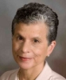
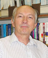

Software Engineering Educators Symposium
(SEES) Program, November 12, 2012
Chrestomathics - Rethinking CS 1
Jim Cohoon, Computer Science Department, University of Virginia and
Joanne McGrath Cohoon, Engineering & Society Department, University of Virginia
8:45 AM - 9:45 AM
Abstract
We describe an effective CS1 approach for encouraging diverse students without prior computer science experiences to pursue computing majors and helping them succeed. Separation of CS1 sections by prior experience level concentrates diverse students in the inexperienced section. Within that section we use several techniques to increase student comprehension and participation, including an integrated lecture/lab, many small examples and assignments, student participation, etc. We discuss the approach and an evaluation of its performance over a multi-year time period.
Presentation Overheads
Here are the overheads from the Chrestomathics presentation.
Resources
Biography
Jim Cohoon is an Associate Professor of Computer Science at the University of Virginia. His research interests include application areas such as swarm robotics, Computer Science education, VLSI physical design, routing, and free flight. His interdisciplinary approach applies and extends nontraditional techniques such as computational geometry, probabilistic search, genetics, and parallel computing. He is a Co-PI on the NSF grant Teachers Attracting Girls to Computing.
Joanne McGrath Cohoon is a Senior Research Scientist at the National Center for Women & IT (NCWIT), and Associate Professor of Science, Technology, and Society at the University of Virginia. Cohoon conducts nationwide empirical studies of gender and computing. Her results are reported in scholarly journals and an award-winning book, co-edited with William Aspray -- Women and Information Technology, Research on Underrepresentation. Cohoon's work at NCWIT involves conducting, translating, applying, disseminating, and evaluating research. She also serves on the CRA-W Board, offers professional development to computing high school teachers, trains and supervises consultants, and collaborates on increasing women's participation in volunteer computing.
The Benefits of Peer-led Team Learning in Teaching Programming
Dr. Barbara G. Ryder, Virginia Tech University
10:15 - 11:15 AM
Abstract
Peer-led team learning is a methodology that has been used in the sciences and mathematics with success, and was recently applied to beginning computer science courses by a consortium of eight colleges and universities under NSF support. Our three year experiment with this approach yielded valuable insights on how to help students to learn concepts and ideas outside of class, in a peer-guided group problem solving situation, that had a positive effect for many students' class performance. The talk will discuss the Peer-Led Team Learning (PLTL) approach, our experiences with it, and the lessons learned from 3+ years experiences.
Presentation Overheads
Here are the overheads from Dr. Ryder's presentation.
Resources
Biography
Dr. Barbara G. Ryder is Head of the Department of Computer Science at Virginia Tech, where she holds the J. Byron Maupin Professorship in Engineering. She received her A.B. degree in Applied Mathematics from Brown University (1969), her Masters degree in Computer Science from Stanford University (1971) and her Ph.D degree in Computer Science at Rutgers University (1982). Dr. Ryder served on the faculty of Rutgers from 1982-2008. She also worked in the 1970s at AT&T Bell Laboratories in Murray Hill, NJ. Dr. Ryder's research interests on static and dynamic program analyses for object-oriented systems focus on usage in practical software tools for ensuring the quality and security of industrial-strength applications.
Dr. Ryder became a Fellow of the ACM in 1998, received the ACM President's Award in 2008, was selected as a CRA-W Distinguished Professor in 2004, and received the ACM SIGPLAN Distinguished Service Award in 2001. She has been an active leader in ACM (e.g., Vice President 2010-2012, Secretary-Treasurer 2008-2010; ACM Council 2000-2008; General Chair, FCRC 2003; Chair ACM SIGPLAN (1995-97)) and has served as a Member of the Board of Directors of the Computer Research Association (1998-2001). Dr. Ryder has served as an editorial board member of ACM Transactions on Programming Languages and Systems, IEEE Transactions on Software Engineering, IEEE Software, Software, Practice and Experience and Science of Computer Programming.
Teaching Software Developer Skills in a Software Engineering Course
Václav Rajlich, Wayne State University
1:45 - 2:45 PM
Abstract
This lecture reviews challenges and constraints that the instructor of a software engineering course faces. It argues that training students in the role of developers in a directed iterative process (DIP), where the most common task is software change (SC), provides them a better introduction to the software engineering discipline than more traditional software engineering courses. In the course projects, students practice developer skills by working on medium-sized open-source software systems, while the instructor supplies all the remaining DIP roles. Providing a comprehensive overview of SC phases, core topics covered include refactoring, concept location, impact analysis, unit testing, etc. At the end, the course briefly reviews the rest of the software engineering discipline.
The results show that this organization of the course gives students a more realistic experience than traditional software engineering courses. The course has been taught repeatedly at Wayne State University and the students have expressed a high level of satisfaction. The resources required by such a course are comparable to other computer science courses. The speaker has written a new textbook supporting this approach [Vaclav Rajlich, Software Engineering: The Current Practice, CRC Press, 2011].
Resources
Biography
Václav Rajlich is a Professor and former Chair of Computer Science at Wayne State University. His research centers on iterative software development, software evolution, and comprehension. He has published approximately 90 refereed papers in journals and conferences, mostly related to the topic of this lecture; the most cited one is cited 830 times according to Google Scholar. An additional five papers, all related to the topics of this lecture, are cited more than 100 times. He has also published a book that covers the current software engineering issues and software developer skills. He is the founder and permanent steering committee member of the IEEE International Conference on Program Evolution (ICPC) and was a Program Chair, General Chair, and Steering Committee Chair of IEEE International Conference on Software Maintenance (ICSM). He is a member of the Advisory Editorial Board of the Journal of Software: Evolution and Process.
Selecting and Managing the Use of Tools in an SE Course
Jonathan Cook, New Mexico State University
3:15 - 4:15 PM
Abstract
With the plethora of open source tools that are available, it is a great time to be a software engineering educator! However, selecting tools to use in your course can be overwhelming, and then managing them so that the students can effectively use them and so that the tools enhance rather than detract from the educational goals of the course can be more than one bargained for. This talk will present ideas and principles behind the goals for integrating SE tools into the students' course experiences, and then discuss various open source tools and experiences in using them, with lessons learned and recommendations for instructors on what to watch for in tools they choose to use.
Presentation Overheads
Here are the overheads from Dr. Cook's presentation.
Biography
Jonathan Cook is an associate professor in the Computer Science Department at New Mexico State University. He received his Ph.D. in Computer Science in 1996 from the University of Colorado, Boulder, and has been with NMSU since 1997. His research interests center around dynamic analysis and runtime monitoring, involving aspect-oriented programming, high performance computing and scientific computation, embedded systems and sensor networks, and cloud computing.